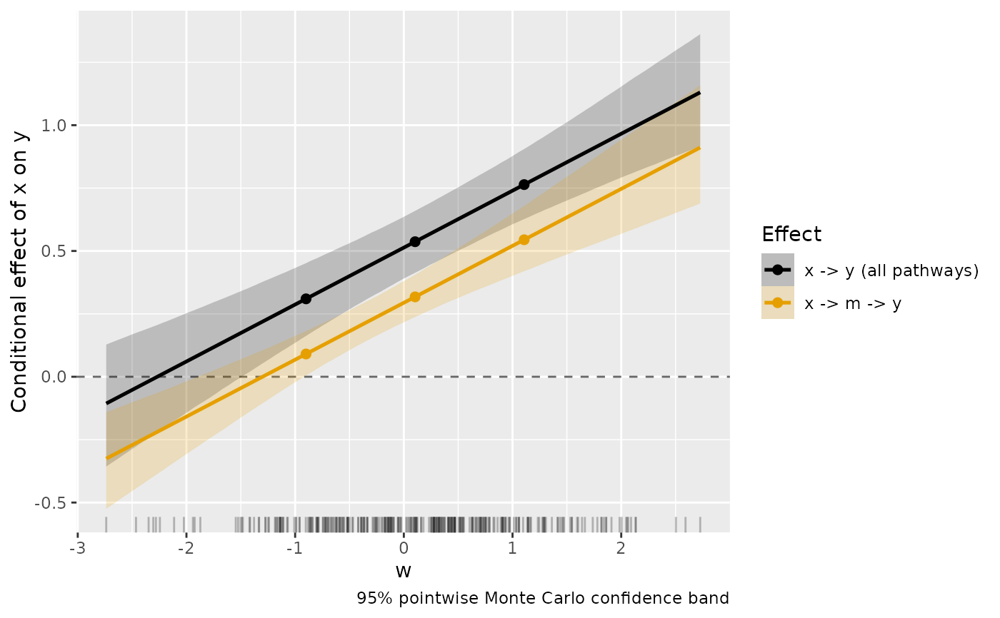
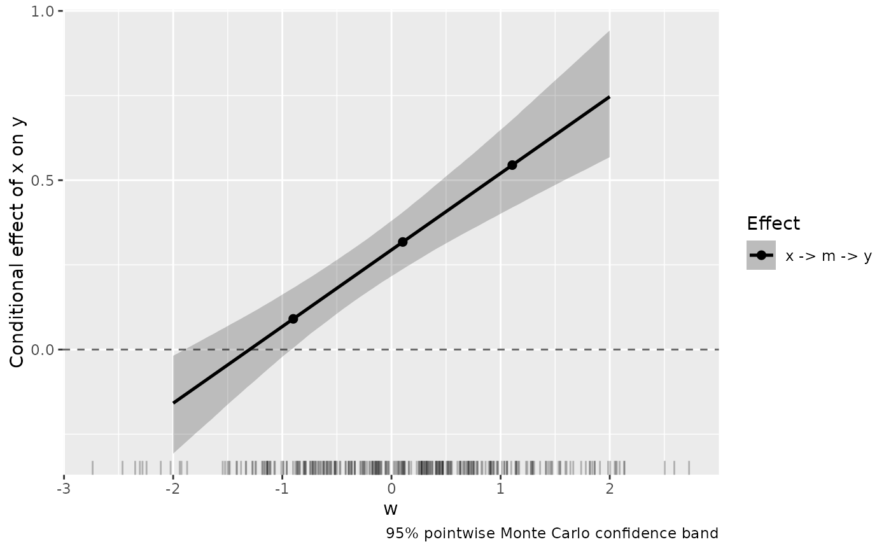

Plot Conditional Effects From a Moderated Mediation Analysis
Source:R/plot_mediation_mbco.R
plot_mediation_mbco.RdDraws the conditional effects from a mediation_mbco
analysis that declared a moderator: for each moderated
pathway effect, the curve tracing how the effect changes over the
moderator's range, with a pointwise confidence band, the probed
values marked, a dashed reference line at zero, and a rug showing
where the moderator was actually observed. The picture answers, at
a glance, the questions the table answers row by row: how large is
the effect at any given moderator value, where (if anywhere) does
its interval exclude zero, and over what part of the moderator's
range the data can support either statement.
Usage
plot_mediation_mbco(
x,
effects = NULL,
conf_level = NULL,
B = 10000,
from = NULL,
to = NULL,
n_grid = 200,
show_probe_values = TRUE,
show_rug = TRUE,
palette = c("okabe_ito", "tableau"),
xlab = NULL,
ylab = NULL,
title = NULL,
seed = NULL
)Arguments
- x
A
dmar_mediation_mbcoobject returned bymediation_mbcowith amoderator. An object fit without a moderator has no conditional effects to draw, and the function says so.- effects
Character vector naming which moderated effects to draw, using the base effect names from the result table (e.g.,
"indirect_via_m","total_effect"). Defaults to all moderated effects. Unmoderated effects are flat lines and are not drawn.- conf_level
Confidence level for the band. Defaults to the level used when the object was fit.
- B
Number of Monte Carlo draws behind the band. Defaults to 10000.
- from, to
Range of moderator values to draw. Defaults to the observed range of the moderator. Values outside the observed range are extrapolation; the rug makes that visible.
- n_grid
Number of grid points along the moderator at which the curve and band are evaluated. Defaults to 200.
- show_probe_values
Logical. If
TRUE(default), mark the probed moderator values (the_at_rows of the result table) as points on each curve.- show_rug
Logical. If
TRUE(default), draw a rug of the observed moderator values along the horizontal axis.- palette
Character string naming the color palette. Defaults to
"okabe_ito", base R's colorblind-safe Okabe-Ito palette;"tableau"is also available.- xlab, ylab, title
Optional axis labels and title. The defaults name the moderator on the horizontal axis and describe the vertical axis as the conditional effect of
xony.- seed
Optional integer seed for the Monte Carlo band, used locally (the caller's random number generator state is restored on exit). Default
NULLleaves the random number generator state alone.
Value
A ggplot2 object. Its data contains one row per
effect and grid value with columns effect_label,
w_value, estimate, band_lower, and
band_upper, so the numbers behind the picture are
recoverable from the object itself.
Details
What is drawn, and where it comes from. A pathway effect
in a model with interactions is a polynomial in the moderator: a
straight line when the pathway is moderated in one place (its slope
is the index of moderated mediation), a curve when it is moderated
in more than one. mediation_mbco derives each
polynomial symbolically and stores it with the result, so this
function evaluates the same quantity the table probes, just
everywhere in the moderator's range instead of at two or three
values. The marked points are exactly the table's _at_ rows.
The band is pointwise. At each grid value of the
moderator, the band is a conf_level Monte Carlo confidence
interval for the conditional effect at that one value: the path
coefficients are drawn from their joint normal approximation
(MacKinnon, Lockwood, & Williams, 2004), each draw's polynomial is
evaluated along the grid, and the band connects the pointwise
quantiles. Read vertically at a single moderator value of interest,
it is an ordinary confidence interval. Read horizontally, the
moderator values where the band crosses zero estimate the
Johnson-Neyman boundaries (Johnson & Neyman, 1936; Preacher,
Rucker, & Hayes, 2007), the values separating "interval excludes
zero" from "interval includes zero". That horizontal reading scans
many intervals at once, so the pointwise band understates the
uncertainty of the boundary locations themselves; treat the
crossing points as estimates, not as sharp cutoffs, and lean on the
table's moderation and constancy tests for the formal question of
whether the effect depends on the moderator at all.
The rug guards against extrapolation. The curve can be evaluated at any moderator value, but the data only inform it where the moderator was observed. The rug shows that support directly; a confident-looking band in a region with no rug beneath it is arithmetic, not evidence.
The band and the table may differ slightly. The band is
always Monte Carlo, whichever ci_method the table used. At a
probed value, a Monte Carlo band and a profile likelihood or Wald
interval agree closely in large samples but are not the same
construction; small discrepancies between the band and an
_at_ row's interval are expected, not a defect.
The plot is an ordinary ggplot2 object, so any further
customization (themes, additional layers, institutional color
scales) can be added to the returned value with +.
References
Johnson, P. O., & Neyman, J. (1936). Tests of certain linear hypotheses and their application to some educational problems. Statistical Research Memoirs, 1, 57–93.
MacKinnon, D. P., Lockwood, C. M., & Williams, J. (2004). Confidence limits for the indirect effect: Distribution of the product and resampling methods. Multivariate Behavioral Research, 39(1), 99–128. doi:10.1207/s15327906mbr3901_4
Preacher, K. J., Rucker, D. D., & Hayes, A. F. (2007). Addressing moderated mediation hypotheses: Theory, methods, and prescriptions. Multivariate Behavioral Research, 42(1), 185–227. doi:10.1080/00273170701341316
Tofighi, D., & Kelley, K. (2020). Improved inference in mediation analysis: Introducing the model-based constrained optimization procedure. Psychological Methods, 25(4), 496–515. doi:10.1037/met0000259
See also
mediation_mbco for the analysis this
function displays; regions_of_significance for the
analogous display for mixed-effects model interactions.
Other plotting:
plot_R2(),
plot_cfa_k(),
plot_ci(),
plot_equivalence(),
plot_irt_information(),
plot_regions_of_significance(),
plot_smd(),
plot_trajectories(),
plot_trajectories_fitted(),
power_equivalence_md_plot()
Author
Ken Kelley kkelley@nd.edu
Examples
# \donttest{
# First-stage moderated mediation: the effect of x on m depends on
# w, so the indirect effect of x on y is a line in w; the direct
# effect is unmoderated and is not drawn.
set.seed(113)
n <- 300
x <- rnorm(n)
w <- rnorm(n)
m <- 0.5 * x + 0.3 * w + 0.4 * x * w + rnorm(n)
y <- 0.5 * m + 0.2 * x + 0.1 * w + rnorm(n)
d_mod <- data.frame(x = x, w = w, m = m, y = y)
res <- mediation_mbco("m ~ x + w + x:w \n y ~ m + x + w",
data = d_mod, x = "x", y = "y",
moderator = "w", ci_method = "wald")
plot_mediation_mbco(res, seed = 113)

# Only the indirect pathway, over a chosen moderator range.
plot_mediation_mbco(res, effects = "indirect_via_m",
from = -2, to = 2, seed = 113)

# }